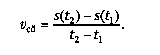

1. Понятие производной. Оно появилось практически одновременно в работах великих математиков конца XVII в. — И. Ньютона и Г. Лейбница. Ньютон сумел с помощью этого понятия развить представления о механическом движении, а Лейбниц — дать общий способ решения ряда неприступных до этого геометрических задач. Для Ньютона производная — это скорость, для Лейбница производная — это угловой коэффициент касательной. Оба подхода (механический и геометрический) являются одинаково важными и неразрывно связаны между собой, несмотря на кажущееся внешнее различие.
2. Геометрический смысл производной Уравнение касательной имеет вид y = y0 + k(x − x0), где y0 = f(x0), k — угловой коэффициент касательной.
В определении касательной требуют уточнения слова «прямая, тесно прилегающая к графику вблизи некоторой точки». Вначале уточним, как можно оценивать близость к некоторой точке. Возьмем точку x0. Расстояние от точки x до точки x0 равно d = |x − x0|. Пусть это расстояние мало. Тогда числа d 2 = (x − x0) 2 , d 3 = |x − x0| 3 , d 4 = (x − x0) 4 , … быстро уменьшаются (например, если d = 0,01, то d 2 = 0,0001, d 3 = 0,000001 и т. д.). Если какое-то число A представлено в виде A = A0 + A1d + A2d 2 +A3d 3 + …, то ясно, что A0 является самым грубым приближением к A, A0 + A1d — более точным, A0 + A1d + A2d 2 — еще более точным и т. д. Обычно бывает достаточно линейного приближения, которое получается при отбрасывании слагаемых, пропорциональных квадрату расстояния d и еще более мелких.
Уравнение касательной осуществляет линейное приближение к значениям функции вблизи фиксированной точки x0. Это и есть смысл слов «тесно прилегает». Распознавать уравнение касательной будем так. Если удастся представить значение функции f(x) вблизи точки x0 в виде: f(x) = y0 + k1(x − x0) + k2(x − x0) 2 + …, то линейное приближение y = y0 + + k1(x − x0) и есть уравнение касательной.
Геометрическое определение производной. Производной гладкой функции в точке x называется угловой коэффициент касательной к графику функции, проведенной в точке с абсциссой x.
Производная функции y = f(x) обозначается y′ или f ′. Операция нахождения производной называется дифференцированием.
дной называется дифференцированием. Уравнение касательной имеет вид y = y0 + k(x − x0), где y0 = f(x0), k — угловой коэффициент касательной.
В определении касательной требуют уточнения слова «прямая, тесно прилегающая к графику вблизи некоторой точки». Вначале уточним, как можно оценивать близость к некоторой точке. Возьмем точку x0. Расстояние от точки x до точки x0 равно d = |x − x0|. Пусть это расстояние мало. Тогда числа d 2 = (x − x0) 2 , d 3 = |x − x0| 3 , d 4 = (x − x0) 4 , … быстро уменьшаются (например, если d = 0,01, то d 2 = 0,0001, d 3 = 0,000001 и т. д.). Если какое-то число A представлено в виде A = A0 + A1d + A2d 2 +A3d 3 + …, то ясно, что A0 является самым грубым приближением к A, A0 + A1d — более точным, A0 + A1d + A2d 2 — еще более точным и т. д. Обычно бывает достаточно линейного приближения, которое получается при отбрасывании слагаемых, пропорциональных квадрату расстояния d и еще более мелких.
Уравнение касательной осуществляетлинейное приближение к значениям функции вблизи фиксированной точки x0. Это и есть смысл слов «тесно прилегает». Распознавать уравнение касательной будем так. Если удастся представить значение функции f(x) вблизи точки x0 в виде: f(x) = y0 + k1(x − x0) + k2(x − x0) 2 + …, то линейное приближение y = y0 + + k1(x − x0) и есть уравнение касательной.
Геометрическое определение производной. Производной гладкой функции в точке x называется угловой коэффициент касательной к графику функции, проведенной в точке с абсциссой x.
Производная функции y = f(x) обозначается y′ или f ′. Операция нахождения производной называется дифференцированием.
Геометрический смысл производной
Среди всех прямых, проходящих через точку M, есть одна, которая прилегает к графику наиболее тесно, — это касательная.
Уравнение касательной
3.Механический смысл производнойРассмотрим движение материальной точки. Пусть дана функция s = s(t), позволяющая вычислить путь, который прошла точка к моменту времени t.
Рассмотрим отрезок времени [t1; t2]. Определим среднюю скорость точки на отрезке [t1; t2] как отношение пройденного пути к продолжительности движения: 
Для определения скорости точки в момент времени t (ее в механике часто называют мгновенной скоростью) поступим так: возьмем отрезок времени [t; t1], вычислим среднюю скорость на этом отрезке и начнем уменьшать отрезок [t; t1], приближая t1 к t. Замечаем, что значение средней скорости при приближении t1 к t будет приближаться к некоторому числу, которое и считается значением скорости в момент времени t.
Таким образом, с функцией s = s(t), задающей пройденный путь, можно связать новую функцию v = v(t), значение которой в точке t равно мгновенной скорости. Если данную функцию y = f(x) понимать как зависимость пути y от времени x, то производной функции y будет скорость этого движения.
Формула средней скорости
Вычисление производной функции называют дифференцированием этой функции.
Дифференцирование — нахождение производной функции.
Дифференцирование, или нахождение производной, — это новая математическая операция, имеющая тот же смысл, что в механике — нахождение скорости, а в геометрии — вычисление углового коэффициента касательной.
Таким образом, для нахождения значения производной в данной точке надо рассмотреть маленький участок изменения аргумента вблизи этой точки. Производная будет приближенно равна средней скорости на этом участке (на языке механики) или угловому коэффициенту секущей (на языке геометрии). Для точного вычисления производной надо совершить предельный переход — стянуть отрезок изменения аргумента в точку. Тогда средняя скорость превратится в мгновенную, а секущая — в касательную, и мы вычислим производную.